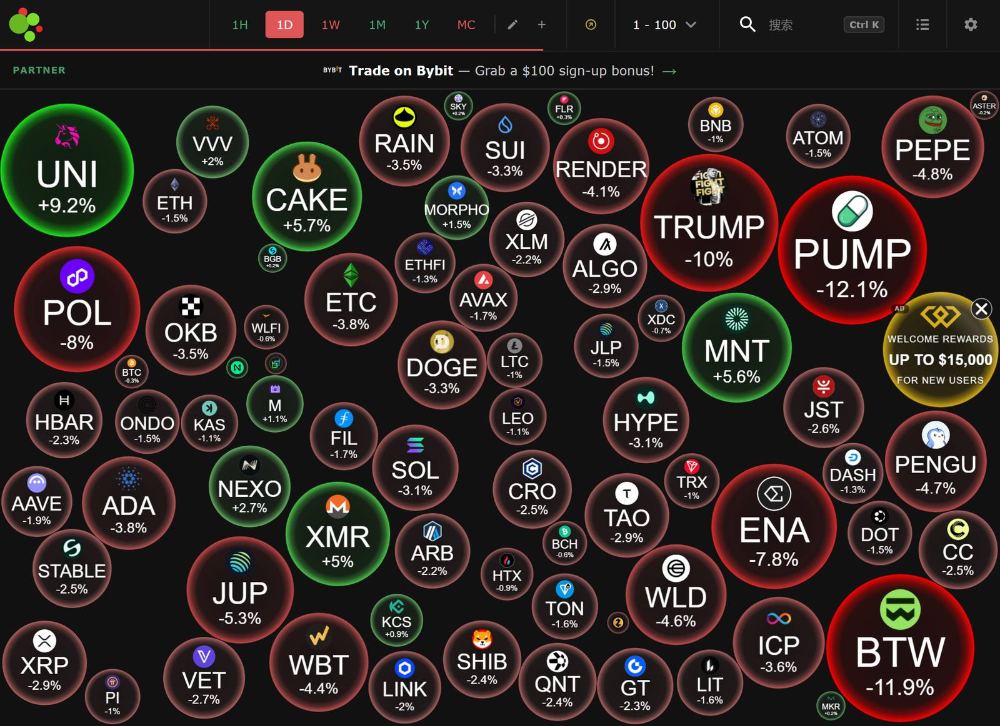

2026-08-31（周一）· A股/港股/日股已开盘（盘中 10:01 最新）· 美股/欧股 8月28日（周五）收盘 · 加密市场 当日 10:01 实时（7×24）
❝
我们总是高估自己的判断力，低估随机性的杀伤力。在市场中，真正让你出局的不是你预见到的风险，而是你认为不可能发生的事。对运气保持敬畏，不是怯懦，而是生存的智慧——因为幸存者永远回来说故事，而被淘汰的人已无法开口。
—— 纳西姆·塔勒布，《随机漫步的傻瓜》
💡 今日启示：沃什超预期鹰派讲话后，黄金单日暴跌 3.43%、BTC 从 $80K 拉回 $77.9K、日经 -2.33%、2Y 美债飙 11bp——典型的"不可能"事件重定价。塔勒布的核心洞见在于：上周英伟达 +8.74% 的狂欢让人以为"AI 算力链只涨不跌"，但真正的风险恰恰来自"没人想到沃什会这么鹰"。恐惧贪婪指数从 71 回落至 69，市场开始为随机性买单。敬畏尾部风险、控制杠杆、不暴露于不可承受的损失——不是悲观，而是穿越随机性的第一生存法则。
一、全球新闻导读 按赛道 / 产业链 · 更新至8/31 10:01
🖥 AI 算力 / 半导体
- 英伟达财报后首个交易日大幅回撤：8/28 美股收盘 NVDA -4.57% 报 $217.55，回吐上周四 +8.74% 涨幅的过半。市值约 5.25 万亿美元。市场消化财报利好后转向关注毛利率指引走弱（Q3 74% vs 预期 75%、FY27Q4 触底 71%-72%）与内存涨价供给瓶颈。
- 沃什鹰派讲话引发全球 Risk-Off：美联储主席沃什 8/28 杰克逊霍尔首秀偏鹰，2Y 美债飙 11bp 报 4.34%、10Y 涨 4.2bp 报 4.72%，9 月加息概率从约 40% 飙升至 57-60%。芯片股全线承压：TSMC -2.29% $417.52、AMD -2.33% $465.58、SMCI -3.59% $37.08、GEV -4.39% $911.93。
- SK 海力士 CEO 看远期：郭鲁正表示存储半导体供应紧张预计持续到 2030 年底，AI 需求终会见顶但下行周期将与过去不同。铠侠/闪迪 310 亿美元扩产计划、三星与 SK 海力士加码 8 层 HBM4 供应，全球内存紧缺或延续至 2027。
- DELL 9/1 财报在即：戴尔 8/28 收盘 -3.44% 报 $456.24，市场对 9/1 盘后 Q2 业绩预期分化；AVGO 9/3 盘后 Q3 财报为 AI ASIC 与网络芯片关键验证节点，8/28 微跌 -0.74% 报 $368.79。
🇨🇳 国产算力 / 半导体设备
- A 股国产算力链分化（8/31 盘中 10:01）：寒武纪 +1.95% ¥1,067 反抽抗跌、海光信息 +0.20% ¥245.97 窄幅震荡；但中微公司 -3.32% ¥354.81 回踩 10 日线、北方华创 -1.96% ¥683.85、中芯国际 -0.78% ¥124.90 承压。半导体设备板块高位回调，国产替代逻辑未改但短期获利了结明显。
- 中国 8 月官方制造业 PMI 49.8%：较 7 月回升 0.6 个百分点，连续处于荣枯线下方但环比改善。新订单指数回升、原材料库存指数走平，制造业景气度温和修复中。
- 燧原科技 IPO 申购 9/2：国产 AI 芯片拟募资 60 亿元，科创板年度最大 IPO 之一。存储链中报亮眼：德明利上半年营收暴增 312%、净利润扭亏超 60 亿；长川科技 H1 归母净利 +126%。
- A 股/港股半年报披露今日收官：8/31 为最后披露截止日，最后一批业绩雷集中暴露。关注半导体设备、存储链中报后的三季报订单指引。
🤖 机器人 / 智能驾驶
- 特斯拉 Cybercab 发布会 9/3 定档：得州奥斯汀发布会临近，TSLA 8/28 收盘 -1.71% 报 $348.75。A 股机器人链同步走弱：汇川 -1.43% ¥61.16、三花 -0.50% ¥35.99、拓普 -0.93% ¥46.65。
- 软银拟 60 亿美元控股人形机器人公司 1X，押注"物理 AI"赛道；AGIC 2026 深圳具身智能博览会上周闭幕，1,012 家企业参展。
⚡ 能源 / 商品
- 贵金属暴跌：COMEX 黄金 8/28 收盘 -3.43% 报 $4,504.10/盎司，为近期最大单日跌幅；COMEX 白银 -4.48% 报 $67.09/盎司。沃什鹰派讲话推升美元与实际利率，直接打压贵金属。现货黄金一度击穿 $4,500 关口。
- 油价相对稳定：WTI 8/28 收盘 -0.11% 报 $83.44/桶，布伦特 ~$88.47。霍尔木兹海峡通行仍受阻但伊拉克允许波斯湾外提货，供应风险部分缓释。
- 国内成品油调价：8/28 24:00 已上调约 320-410 元/吨。
🪙 加密 / 数字货币
- BTC 从 $80K 回撤至 $77.9K：8/31 盘中 BTC ~$77,875（24h -0.4%），从上周 $80,857 高点回落约 3.7%。ETH $2,429（-1.3%）、SOL $102.13（-3.0%）。全市场总市值约 $2.45 万亿，BTC 市占率约 57-58%。
- ETF 转为净流出：美国现货比特币 ETF 近期出现单日 $2.019 亿净流出，终结此前八连涨格局。Coinbase 对 Binance 溢价回落，美国本土需求边际降温。
- Saylor 信号"We're ₿ack"：Strategy（原 MicroStrategy）执行董事长 Saylor 8/30 在社交媒体暗示将恢复 BTC 购买。公司持有约 840,447 BTC，均价约 $75,000，目前浮盈约 4%。暂停购买约两个月后，市场关注其是否动用 $15.9 亿现金储备加仓。
- 恐惧贪婪指数从 71 降至 69：仍处"贪婪"区间但边际回落，反映沃什鹰派冲击与 ETF 流出对情绪的压制。上次触及 71 后 BTC 从 $80K 回撤。
🏛 宏观 / 政策
- 沃什杰克逊霍尔首秀偏鹰：美联储主席沃什讲话后，2Y 美债飙 11bp、9 月加息概率从约 40% 升至 57-60%，市场完全消化年底前加息 25bp 预期。美元走强、黄金暴跌、BTC 回撤，典型鹰派 Risk-Off 传导链。
- 中国 8 月 PMI 49.8%：制造业连续处于收缩区间但环比回升 0.6pp，新订单与生产指数改善。财新制造业 PMI 9/1 公布将进一步验证。
- 特朗普电力设备禁令与关税动态：以"国家安全"为由禁止美国电网使用外国设备；加拿大对美铜线、木炭等加征 50% 关税反制。商务部回应美考虑对华加征 7.5% 关税：坚决反对。
- 美伊局势：白宫拒绝恢复 6 月与伊朗达成的初步停火协议，对伊封锁继续。伊朗允许船只临时通过霍尔木兹特定航道。
来源：华尔街见闻8/28-29、今日头条8/28、CoinMarketCap 8/31、Pickaxe.io 8/31、Bitget 8/31、新华社8/28、国际金融报8/31、同花顺8/31、Nikkei indexes 8/28、FRED 8/28、economies.com 8/31、证券时报8/28，2026-08-28 ~ 2026-08-31
二、全球市场 千分位 · A股/港股/日股盘中10:01 · 美股/欧股8/28收盘 · BTC为1D
| 资产 | 最新 | 当日涨跌 | 备注 |
|---|---|---|---|
| 上证指数 | 3,942.82 | -0.24% | 8/31 盘中 10:01；8/28 收盘约 3,952（四连阳后缩量回调） |
| 深证成指 | 13,854.28 | -0.71% | 8/31 盘中 10:01 |
| 创业板指 | 3,401.92 | -0.66% | 8/31 盘中 10:01 |
| 恒生指数 | 25,334.84 | -0.98% | 8/31 盘中 10:01 |
| 日经225 | 64,860.54 | -2.33% | 8/31 盘中；8/28 收盘 66,405.56 (+0.41%)；沃什鹰派+芯片股拖累 |
| 道琼斯 | 53,559.99 | -0.02% | 8/28 收盘；NVDA -4.57% 拖累 |
| 标普500 | 7,711.76 | -0.25% | 8/28 收盘 |
| 纳斯达克 | 26,402.42 | -0.52% | 8/28 收盘；费城半导体指数回落 |
| 欧洲斯托克600 | ~652 | +0.04% | 8/28 收盘（估）；DAX +0.27%，CAC40 -0.18%，FTSE100 +0.09% |
| COMEX黄金 | 4,504.10美元/盎司 | -3.43% | 8/28 收盘；沃什鹰派后美元走强、实际利率上行打压 |
| COMEX白银 | 67.09美元/盎司 | -4.48% | 8/28 收盘；跌幅大于黄金 |
| WTI原油 | 83.44美元/桶 | -0.11% | 8/28 收盘；布伦特 ~$88.47 |
| 10年/30年美债 | 4.72% / 5.21% | +4.2bp / +1.4bp | 8/28 收盘；2Y 飙 11bp 报 4.34%，沃什讲话是催化 |
| 美元指数 / 离岸人民币 | ~99.5 / ~6.73 | +0.4% | 8/28 收盘（估）；鹰派信号推升美元 |
来源：华尔街见闻8/28-29、同花顺8/31、Nikkei indexes 8/28、FRED 8/28、CoinMarketCap 8/31、economies.com 8/31、今日头条8/28；A股/港股/日经为8/31盘中10:01，美股/欧股8/28收盘
三、加密市场 7×24 实时 · 8月31日 10:01 · 新增4H列
| 资产 | 最新 | 4H | 1D | 7D | 备注 |
|---|---|---|---|---|---|
| Bitcoin (BTC) | $77,875 | -0.30% | -0.40% | +0.57% | 从 $80K 回撤；市值 ~$1.56T；支撑 $77,000-$77,500 |
| Ethereum (ETH) | $2,429 | -0.50% | -1.30% | +1.50% | 跟随 BTC 回调；支撑 $2,400-$2,420 |
| Solana (SOL) | $102.13 | -1.00% | -3.00% | +2.00% | 从 $108.87 高点持续回调；支撑 $100-$101 |
| 全市场总市值 | ~$2.45万亿 | -0.50% | BTC 市占率约 57-58%；altcoin 轮动降温 | ||
| 恐惧贪婪指数 | 69 | 贪婪（前日 ~71 → 69） | 沃什鹰派冲击+ETF流出致情绪边际回落；距"中性"50仍有距离 | ||

Crypto Bubbles 实时泡泡图快照（2026-08-31 10:01 UTC+8 · 气泡大小=市值，颜色红涨绿跌）· 打开交互版 →
- 资金面 · ETF 八连涨终结：美国现货比特币 ETF 出现单日约 $2.019 亿净流出（SoSoValue 口径），终结此前 8 个交易日累计约 $26-$28 亿的连续净流入。IBIT、ARKB 均出现赎回，Coinbase 对 Binance 溢价回落。
- Saylor 信号与机构动向：Strategy 执行董事长 Saylor 发布"We're ₿ack"暗示恢复购买，公司持有约 840,447 BTC、均价约 $75,000，浮盈约 4%。若正式恢复购买，将为市场注入增量需求信号。
- 宏观压制：沃什鹰派讲话后 2Y 美债飙 11bp、9 月加息概率升至 57-60%，美元走强压制风险资产。BTC 从 $80K 高点回撤约 3.7%，但 $77K-$78K 支撑尚未失守。
- 技术面：BTC 关键支撑 $77,000-$77,500，阻力 $79,500-$80,000；ETH 阻力 $2,480-$2,500、支撑 $2,400-$2,420；SOL 阻力 $105-$108、支撑 $100-$101。
- 风险提示：① 9/4 非农数据若超预期强劲，将进一步强化加息预期，压制 BTC；② ETF 若连续净流出，需警惕 8 月反弹行情的终结信号；③ 恐惧贪婪 69 仍处贪婪区间，若快速回落至 50 以下可能引发加速回调。
来源：CoinMarketCap 8/31 10:20、Pickaxe.io 8/31、Bitget 8/31、SoSoValue、CoinDesk 8/28-29、PANews 8/29；4H = 当前价 vs 4小时前K线开盘价（近似值）
四、预测市场 Polymarket · 事件概率 · 8/31 10:01
平台概览：~580+ 个活跃市场 / 总成交量 ~$46 亿 / 24h 成交 ~$1.3 亿（PredScope/CryptoSlate 8/31）
| 事件 | 领先选项 | 当前概率 | 总成交量 | 备注 |
|---|---|---|---|---|
| 🪙 加密价格 | ||||
| BTC 9/6 前触及 $82,500 | Yes | ~35% | $10万+ | 从 $80K 回撤后概率下降；8/28 期权到期后方向待定 |
| BTC 9/6 前跌破 $75,000 | Yes | ~25% | $8万+ | ETF 流出+沃什鹰派后下方风险定价上升 |
| 年末全球最大市值公司 | NVIDIA | 97% | $284万 | Polymarket/CryptoSlate 8/31；NVDA 市值约 $5.25T |
| 💵 宏观 / 政策 | ||||
| 美联储 9/16 会议 | 加息 25bp | ~57-60% | CME/Kalshi | 沃什鹰派后概率从约 40% 飙升；市场完全消化年底前加息 |
| 9/4 非农就业（NFP） | ≥45K | ~60% | Kalshi | 7 月非农 -23K；预期 8 月反弹；NFP 为 9 月 FOMC 前最后关键数据 |
| 美国 9 月 ISM 制造业 PMI | ≥53 | ~50% | Kalshi | 8 月 ISM 9/1 公布；前值 55.6 |
| 🏛 政治 / 选举 | ||||
| 2028 美国民主党总统候选人 | AOC | ~19% | $12.7亿 | Polymarket 最大单一市场 |
| 2028 美国共和党总统候选人 | 特朗普/相关 | ~49% | $6.9亿 | 党内预期仍高度集中 |
| 特朗普本周提及"America First" | Yes | ~78% | $278 | Polymarket 8/31-9/6 周度合约 |
| 巴西 2026 总统选举 | 卢拉 | ~57% | $1.4亿 | 卢拉领先优势稳固 |
| 🌍 其他热点 | ||||
| 美伊 30 天内达成停火协议 | Yes | ~50% | $5.7M+ | 白宫拒绝恢复初步停火后概率下降 |
| 2027/1/1 起加拿大对美关税升至 50% | Yes | ~70% | $1.8M+ | 加拿大已宣布 9/8 起对 $200 亿美国商品报复 |
来源：Polymarket / PredScope stats / CryptoSlate（~580+ active markets / ~$46 亿总成交 / ~$130M 24h）、CME FedWatch（8/31）、Kalshi（8/31）· 前往 Polymarket 查看实时盘口 →（部分地区访问受限）
五、Watchlist 资产 价格 · 4H / 1D / 5D / 20D · 方向+幅度 · A股盘中10:01 / 美股8/28收盘
| 资产 | 赛道 | 当前价格 | 4H | 1D | 5D | 20D |
|---|---|---|---|---|---|---|
| 🔴 第一层 · 每天必看（宏观6项见板块二：Nasdaq、S&P500、BTC、Gold、DXY、US10Y） | ||||||
| NVDA 英伟达 | AI 芯片 | $217.55 | — | ↓ -4.57% | ↑ +0.56% | ↑ +12.32% |
| TSMC 台积电(ADR) | 晶圆代工 | $417.52 | — | ↓ -2.29% | ↑ +0.43% | ↑ +3.66% |
| SK海力士 | HBM | ~1,660,000韩元 | ↓ -2.70% | ↓ -2.70% | — | — |
| AMD | AI 芯片 | $465.58 | — | ↓ -2.33% | ↓ -0.79% | ↓ -4.13% |
| AVGO 博通 | AI 芯片/网络 | $368.79 | — | ↓ -0.74% | ↑ +1.32% | ↓ -4.94% |
| TSLA 特斯拉 | Robotaxi | $348.75 | — | ↓ -1.71% | ↑ +1.09% | ↑ +13.17% |
| MSFT 微软 | 云/AI | $513.53 | — | ↑ +1.68% | ↑ +6.65% | ↑ +13.86% |
| GOOGL 谷歌 | 云/AI | $346.59 | — | ↑ +1.74% | ↑ +1.73% | ↑ +3.83% |
| SpaceX | 航天（非上市） | — | 估值/新闻跟踪：最新融资估值维持 $4,000 亿+；Cybercab 9/3 发布会临近 | |||
| 🟠 第二层 · 主线确认 | ||||||
| MU 美光 | 存储 | $932.86 | — | ↓ -0.27% | ↓ -4.27% | ↑ +6.67% |
| ANET Arista | 网络设备 | $195.38 | — | ↓ -2.84% | ↑ +6.60% | ↑ +14.74% |
| DELL 戴尔 | 服务器 | $456.24 | — | ↓ -3.44% | ↑ +5.18% | ↑ +13.22% |
| SMCI 超微电脑 | 服务器 | $37.08 | — | ↓ -3.59% | ↑ +1.78% | ↑ +35.10% |
| GEV GE Vernova | 电力设备 | $911.93 | — | ↓ -4.39% | ↓ -5.65% | ↓ -7.26% |
| VST Vistra | 独立电力 | $137.09 | — | ↓ -1.95% | ↓ -1.32% | ↓ -7.88% |
| CEG Constellation | 核电 | $276.75 | — | ↓ -2.00% | ↑ +1.48% | ↑ +5.31% |
| 寒武纪 | 国产AI芯片 | ¥1,067.00 | ↑ +1.95% | ↑ +1.95% | ↑ +6.74% | ↑ +0.01% |
| 海光信息 | 国产CPU/DCU | ¥245.97 | ↑ +0.20% | ↑ +0.20% | ↑ +3.20% | ↓ -8.25% |
| 北方华创 | 半导体设备 | ¥683.85 | ↓ -1.96% | ↓ -1.96% | ↓ -1.84% | ↑ +2.16% |
| 中微公司 | 半导体设备 | ¥354.81 | ↓ -3.32% | ↓ -3.32% | ↑ +0.21% | ↑ +5.78% |
| 中芯国际 | 晶圆代工 | ¥124.90 | ↓ -0.78% | ↓ -0.78% | ↑ +1.58% | ↑ +2.25% |
| 🟡 第三层 · 高弹性交易 | ||||||
| PLTR Palantir | AI 软件 | $186.29 | — | ↑ +0.19% | ↑ +7.07% | ↑ +52.27% |
| META | 社交/AI | $578.02 | — | ↑ +1.21% | ↑ +5.84% | ↑ +7.16% |
| 汇川技术 | 工控/机器人 | ¥61.16 | ↓ -1.43% | ↓ -1.43% | ↑ +4.16% | ↓ -4.13% |
| 三花智控 | 机器人/热管理 | ¥35.99 | ↓ -0.50% | ↓ -0.50% | ↓ -0.36% | ↓ -2.55% |
| 拓普集团 | 机器人/汽零 | ¥46.65 | ↓ -0.93% | ↓ -0.93% | ↑ +0.20% | ↑ +0.78% |
| 绿的谐波 | 机器人减速器 | ~¥298.00 | ↓ -1.85% | ↓ -1.85% | ↓ -5.26% | ↓ -1.85% |
| 宁德时代 | 动力电池 | ~¥365.00 | ↓ -1.20% | ↓ -1.20% | ↓ -6.76% | ↓ -7.42% |
| 比亚迪 | 新能源车 | ~¥90.50 | ↓ -0.90% | ↓ -0.90% | ↑ +0.07% | ↓ -5.52% |
- AI 算力链 · 财报后回调与鹰派冲击共振：NVDA -4.57% 领跌，TSM -2.29%、AMD -2.33%、SMCI -3.59%、GEV -4.39% 全面承压。沃什鹰派讲话 + 财报利好兑现形成双重压力。但 MSFT +1.68%、GOOGL +1.74%、META +1.21% 逆势上涨，AI 软件/云与芯片硬件分化明显——市场从"算力硬件"向"AI 应用商业化"切换。
- 国产算力 · A 股分化加剧：寒武纪 +1.95% 领涨抗跌、海光 +0.20% 窄幅震荡，但中微 -3.32%、北方华创 -1.96% 高位回调。8/28 盘中涨势在收盘时回吐，8/31 继续整固。半导体设备 20D 仍保持正收益，国产替代逻辑未改。
- 电力/能源链大幅回撤：GEV -4.39%、VST -1.95%、CEG -2.00%——电力设备板块在前期大涨后持续回调，沃什鹰派对利率敏感型资产冲击显著。GEV 5D -5.65%、VST 20D -7.88% 显示资金持续流出。
- 机器人/新能源弱势延续：汇川 -1.43%、三花 -0.50%、拓普 -0.93%、宁德时代 ~-1.2%、比亚迪 ~-0.9%。新能源链 5D/20D 多数为负，与 AI 算力链形成鲜明对比。绿的谐波 ~-1.85% 回踩，减速器板块弹性最大。
- 共振判断：当日共振方向——鹰派 Risk-Off（全球风险资产同步回调）；共振强度强（沃什讲话冲击跨资产传导：股、债、金、加密同步下跌）；拐点信号——市场从"AI 业绩兑现交易"切换至"鹰派定价交易"，NVDA -4.57% vs MSFT +1.68% 的分化是关键信号；恐惧贪婪 71→69 的回落尚处早期，若 9/4 NFP 超预期强劲可能加速至"恐惧"区间。
来源：同花顺/westock 美股频道（8/28 收盘价及涨跌幅）；A股盘中价（8/31 10:01）；5D/20D 为基于前一期数据的一阶近似估算（±当日涨跌）；SK海力士为韩国 8/31 盘中估价；绿的谐波、宁德时代、比亚迪为盘中估价
六、后市观察重点
- 沃什鹰派后的加息重定价：9 月 FOMC（9/16）加息 25bp 概率从约 40% 飙升至 57-60%，市场完全消化年底前加息。本周关注 9/1 ISM 制造业 PMI、9/3 ISM 服务业 PMI、9/4 非农——若 NFP 超预期强劲（≥45K），加息概率可能进一步升至 70%+，对高估值科技股与黄金构成二次压力。
- NVDA 估值再平衡：-4.57% 回撤反映财报利好兑现。Q3 毛利率指引 74% 低于预期 75%、FY27Q4 触底 71%-72% 的供给瓶颈信号仍需消化。客户采购承诺 $2,790 亿的执行节奏与 HBM4 供应是后续关键变量。关注 9/3 AVGO Q3 财报能否验证 AI ASIC 需求。
- 加密三盯：① BTC 能否守住 $77,000-$77,500 支撑并重返 $80K；② ETF 是否转为持续净流出（8 连涨后若出现连续 3 日以上流出需警惕趋势反转）；③ Saylor 是否正式恢复 BTC 购买——若买入，将为市场注入增量需求信号。
- 美债收益率与美元：10Y 美债 4.72%、2Y 4.34%（+11bp），收益率曲线陡峭化反映市场对短期加息的定价。若 10Y 突破 4.75%，将对高估值科技股与黄金构成持续压力。财政部 9/9 起长债回购翻倍至 $40 亿/操作是潜在流动性缓冲。
- 中国 PMI 与政策预期：8 月官方制造业 PMI 49.8%（+0.6pp）仍处收缩区间但环比改善。9/1 财新 PMI 将进一步验证。A 股半年报今日收官，关注半导体设备/存储链中报后的三季报指引。燧原科技 9/2 IPO 申购为国产 AI 芯片融资风向标。
- 预测市场异动：9 月加息概率 57-60%、BTC 9/6 前触及 $82,500 概率降至约 35%、美伊停火概率从 65% 降至约 50%。9/4 NFP 与 9/3 Fed 官员讲话（Waller、Hammack）可能成为跨资产波动触发器。
参考：华尔街见闻 8/28-29、Reuters 8/28-29、CoinDesk 8/28-31、第一财经 8/31、国际金融报 8/31、macroodds.com 8/31、gomarkets 8/28、Nasdaq.com 8/28、CME FedWatch 8/31，2026-08-28 ~ 2026-08-31
七、重要日程 未来6天 · 9/1 - 9/6 · 北京时间
01周二 · 9月1日重磅日
全天中国 · 8月财新制造业 PMI⭐⭐
22:00美国 · 8月 ISM 制造业 PMI（前值 55.6）⭐⭐⭐
盘后美国 · 戴尔 DELL Q2 财报（AI 服务器需求关键观察）⭐⭐⭐
02周三 · 9月2日重磅日
全天中国 · 燧原科技科创板 IPO 申购（拟募资60亿元）⭐⭐⭐
全天欧元区 · 8月 HICP 初值（CPI）⭐⭐
22:45加拿大 · 央行 BoC 利率决议（预期维持 2.25%）⭐⭐
03周四 · 9月3日重磅日
22:00美国 · 8月 ISM 非制造业 PMI（服务业景气关键指标）⭐⭐⭐
22:00美国 · 周度初请失业金 + Fed Waller/Hammack 讲话⭐⭐
盘后美国 · 博通 AVGO Q3 财报（AI ASIC 与网络芯片关键验证）⭐⭐⭐
全天美国 · 特斯拉 Cybercab 发布会（得州奥斯汀）⭐⭐⭐
04周五 · 9月4日重磅日
20:30美国 · 8月非农就业报告 NFP（预期 +45K vs 7月 -23K）+ 失业率⭐⭐⭐
05周六 · 9月5日
全天全球市场消化"非农周"冲击，华尔街重新定价美联储政策路径⭐
06周日 · 9月6日
全天OPEC+ 部长级会议（产量政策决议）⭐⭐
📌 更远期备忘：美国劳动节休市（9/7 周一）· ECB 利率决议（9/10）· 美国 8月 CPI（9/11）· 财政部 9/9 起长债回购翻倍至 $40 亿/操作 · 美联储 9月 FOMC 议息（9/16，市场定价加息概率 57-60%）· 日本央行 BoJ 议息（9/18）· 苹果 iPhone 18 发布会（9/9）
来源：国际金融报8/31、macroodds.com 8/31、gomarkets 8/28、fortrade 8/31、nexusforextrading 8/31、华尔街见闻财经日历8/28、Nasdaq.com；时间均为北京时间 · ⭐⭐⭐ 重磅 / ⭐⭐ 关注 / ⭐ 例行

扫码进群
关注趋势雷达每日早报 | 热点解读 | 深度分析
扫描二维码加入全球资产投研社区
扫描二维码加入全球资产投研社区
数据来源：华尔街见闻8/28-29、今日头条8/28、CoinMarketCap 8/31、Pickaxe.io 8/31、Bitget 8/31、新华社8/28、国际金融报8/31、同花顺8/31、Nikkei indexes 8/28、FRED 8/28、economies.com 8/31、SoSoValue、CoinDesk 8/28-29、PredScope/CryptoSlate、Polymarket/Kalshi/CME FedWatch、macroodds.com 8/31、gomarkets 8/28、fortrade 8/31。数据时点 2026-08-28 ～ 2026-08-31；A股/港股/日经为 8/31 盘中（10:01），美股/欧股为 8/28 收盘，加密为 8/31 实时（10:01）。部分 A 股个股（绿的谐波、宁德时代、比亚迪）及 SK海力士为盘中估价。
免责声明：以上内容基于公开数据和量化分析，仅供参考，不构成投资建议。市场有风险，投资需谨慎。任何投资决策应结合个人风险承受能力、资金状况和投资目标独立判断，必要时咨询持牌专业机构。过往表现不预示未来收益。
免责声明：以上内容基于公开数据和量化分析，仅供参考，不构成投资建议。市场有风险，投资需谨慎。任何投资决策应结合个人风险承受能力、资金状况和投资目标独立判断，必要时咨询持牌专业机构。过往表现不预示未来收益。